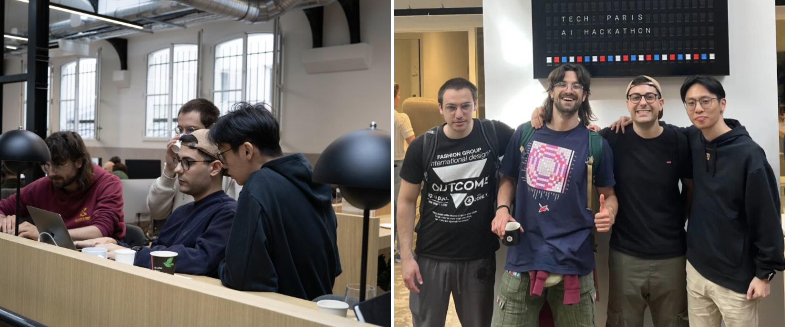

Introduction
If you’ve been following the evolution of API development and AI integration, you’ve likely encountered two important but fundamentally different approaches: OpenAPI and MCP (Model Context Protocol) 🤖. While they might seem similar at first glance—both deal with connecting systems and enabling integrations—they serve very different purposes in today’s tech landscape.
OpenAPI vs MCP
What is OpenAPI? 📋
OpenAPI (formerly known as Swagger) is a specification for describing REST APIs that defines a standard, programming language-agnostic interface description for HTTP APIs. Think of it as a universal language that tells developers exactly how to interact with an API—what endpoints are available, what data to send, and what to expect in return 💬.
The OpenAPI Initiative maintains this open standard, with comprehensive documentation available at spec.openapis.org and learning resources at learn.openapis.org.
Here’s a simple OpenAPI specification example:
openapi: 3.0.0
info:
title: Weather API
version: 1.0.0
paths:
/weather:
get:
summary: Get current weather
parameters:
- name: city
in: query
required: true
schema:
type: string
responses:
'200':
description: Weather data
content:
application/json:
schema:
type: object
properties:
temperature:
type: number
condition:
type: string
This specification tells any developer (or tool) exactly how to fetch weather data from this API. It’s documentation, validation, and a contract all rolled into one ✅.
Enter MCP: Model Context Protocol ⚡
MCP represents a newer paradigm designed specifically for AI agents and language models. Introduced by Anthropic in November 2024, MCP creates a standardized way for AI systems to interact with external tools and data sources. As described in the official MCP documentation, it serves as “a USB-C port for AI applications” 🔌.
The key difference? OpenAPI describes how humans (or their applications) should call APIs, while MCP describes how AI agents should access and use tools 🎯.
MCP has gained rapid adoption across the industry, with major AI providers including OpenAI and Google DeepMind adopting the protocol 🌟. The MCP specification provides comprehensive technical details for implementers.
Here’s what an MCP tool definition might look like:
// MCP Server Example
const server = new MCPServer({
name: "weather-tools",
version: "1.0.0"
});
server.addTool({
name: "get_weather",
description: "Get current weather for a city",
inputSchema: {
type: "object",
properties: {
city: {
type: "string",
description: "City name to get weather for"
}
},
required: ["city"]
},
handler: async (args) => {
// Fetch weather data
return {
temperature: 22,
condition: "sunny",
city: args.city
};
}
});
When to Use Which? 🤔
Choose OpenAPI when:
- Building traditional web APIs for human developers
- Need broad ecosystem support and tooling
- Working with existing REST-based architectures
- Requiring detailed API documentation for teams
Choose MCP when:
- Building tools specifically for AI agents
- Want AI systems to discover and use capabilities dynamically
- Need context-aware, conversational interactions
- Developing in AI-first environments
The Translation Challenge 🌉
Here’s where things get interesting for developers: many existing systems have robust OpenAPI specifications, but to leverage AI agents effectively, we need MCP compatibility. This creates a translation problem—how do you bridge these two worlds?
Converting between OpenAPI and MCP isn’t just about changing formats; it requires understanding the semantic differences:
# OpenAPI endpoint
GET /users/{id}/orders?status=pending
# Might become MCP tool
{
"name": "get_user_pending_orders",
"description": "Retrieve pending orders for a specific user",
"parameters": {
"user_id": "string",
"include_details": "boolean"
}
}
The MCP version is more descriptive and context-aware, helping AI agents understand not just how to call the function, but when and why it might be useful 🧠.
The Community Perspective 💬
The developer community has been actively discussing the implications of these two approaches. As one developer noted in a DEV Community discussion: “Having a stateful 1:1 mapped client-server connection like MCP defines it just to get the weather in a certain city is a bit of an overkill. And if it is just a small stateless REST API, providing an OpenAPI runner is good enough. But once you have a more complex use case that involves state or require a deep interaction between the LLM and the application, MCP can be a great fit.”
The conversation on social platforms reflects this pragmatic approach—developers are recognizing that both protocols have their place, with discussions on LinkedIn highlighting how “open, modular protocols like MCP lower friction, speed up experimentation and create the conditions for early network effects.”
Making the Translation Easy 🛠️
Converting between these specifications manually is time-consuming and error-prone. That’s why we built EasyMCP (EasyMCP on GitHub), a tool that automatically translates OpenAPI specifications to MCP format, making it simple for developers to bring their existing APIs into the AI ecosystem 🚀.
Our solution ranked 3rd 🥉 at the Paris AI Hackathon 🏆 organized by TechEurope and sponsored by big players such as HuggingFace, Mistral AI and ElevenLabs, demonstrating the real need for this kind of translation layer in today’s rapidly evolving AI landscape.

Looking Forward 🔮
Both OpenAPI and MCP will likely coexist, serving their respective ecosystems. OpenAPI continues to be the gold standard for human-to-system API communication, with its extensive tooling ecosystem and mature development practices. Meanwhile, MCP is emerging as the standard for AI-to-system integration, with Microsoft announcing MCP support in Windows 11 and Copilot Studio integration.
The real opportunity lies in creating seamless bridges between these worlds—enabling organizations to leverage their existing OpenAPI investments while unlocking the power of AI-driven automation through MCP 🔗.
Additional Resources: 📚
- OpenAPI Specification - Official specification
- Model Context Protocol Documentation - Complete MCP guide
- OpenAPI Tools - Comprehensive tooling ecosystem
- MCP GitHub Organization - SDKs and reference implementations